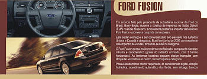
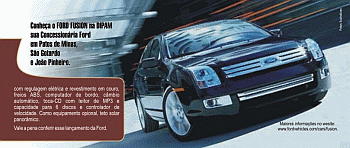

Em anúncio feito pelo presidente da subsidiária nacional da Ford do Brasil, Barry Engle, durante a coletiva de imprensa no Salão Detroit (EUA) no início desse ano, a montadora passaria a importar do México o Ford Fusion - promessa cumprida com sucesso.
Este sedan começou a ser comercializado ano passado nos Estados Unidos e Canadá e chegou ao Brasil em junho de 2006 com excelente desempenho de vendas, tornando-se líder na categoria.
 O Ford Fusion possui estilo moderno e sofisticado, com pacote dianteiro robusto e característico (grade do radiador cromada, com 3 barras horizontais). As lanternas traseiras seguem design triangular com lâmpadas vermelhas ao centro, moderno para a categoria.
O Ford Fusion possui estilo moderno e sofisticado, com pacote dianteiro robusto e característico (grade do radiador cromada, com 3 barras horizontais). As lanternas traseiras seguem design triangular com lâmpadas vermelhas ao centro, moderno para a categoria.
Possui acabamento interior requintado, ar-condicionado digital, direção hidráulica, acendimento automâtico dos faróis, seis airbags, bancos com regulagem elétrica e revestimento em couro, freios ABS, computador de bordo, câmbio automático, toca-CD com leitor de MP3 e capacidade para 6 pdiscos e controlador de velocidade. Como equipamento opcional, teto solar panorâmico.
Vale a pena conferir esse lançamento da Ford.
Maiores informações no website: www.fordvehicles.com/cars/fusion